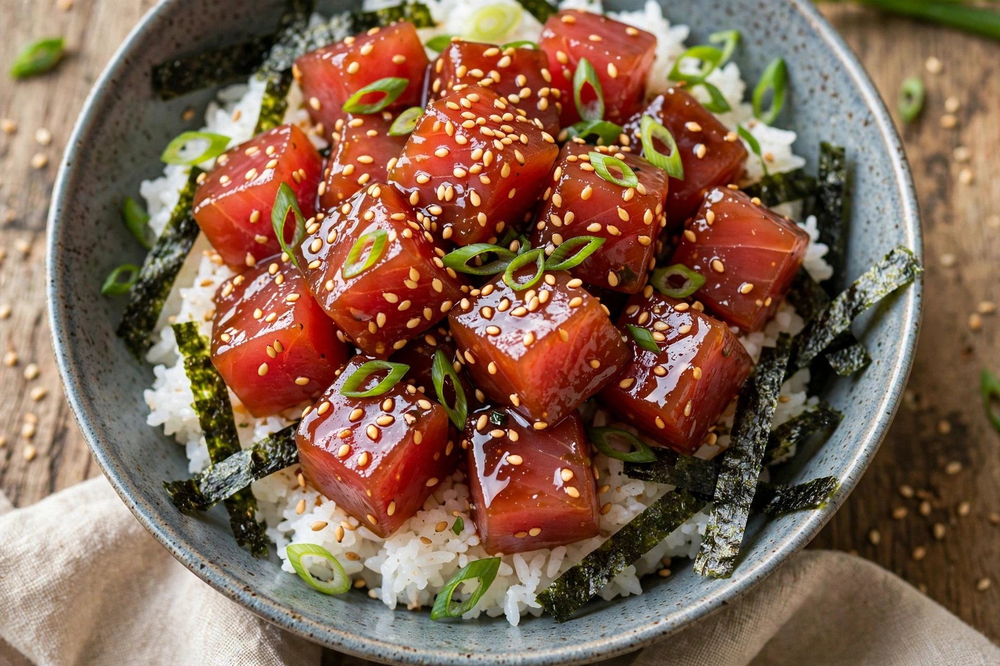

| Place of origin | Hawaii, United States |
| Main ingredients | Diced raw fish (usually ahi tuna or salmon), soy sauce, sesame oil, onion, seaweed |
| Serving | Appetiser, or over rice as a poke bowl |
| Name meaning | Hawaiian for "to slice or cut crosswise" |

Poke (/ˈpoʊkeɪ/; Hawaiian for "to slice" or "cut crosswise into pieces") is a dish of diced raw fish tossed with seasonings and served either as an appetiser or, over rice, as a main course. It is one of the main dishes of Native Hawaiian cuisine.
Pre-contact Hawaiians seasoned raw reef fish and other seafood with sea salt, candlenut (in amona, roasted kukui nut), seaweed (limu) and other local ingredients. The modern form emerged with later influences: Japanese immigrants brought soy sauce (shoyu) and sesame oil, and sweet Maui onion became standard. The most common fish is ahi (yellowfin or bigeye tuna), followed by salmon, tako (octopus), and other seafood; popular styles include shoyu poke, limu poke and spicy ahi with mayonnaise and chilli.
From about 2012, poke spread rapidly across North America and worldwide in fast-casual "poke bowl" restaurants, typically serving cubed fish over rice with a wide range of toppings — avocado, edamame, mango, crispy onions, ponzu and various sauces — in a fusion style more distant from the Hawaiian original. The boom raised concerns about tuna sustainability and about cultural appropriation of a Native Hawaiian food.